ふりがな整備士の画面
実際の iPhone・iPad の画面です。最初の設定から、問題・解説・訳・購入まで。
iPhone 15 Pro Max（iOS 26.7）の実機で撮った画面と、App Store 用の画面です。2026年10月時点。
はじめて開いたとき
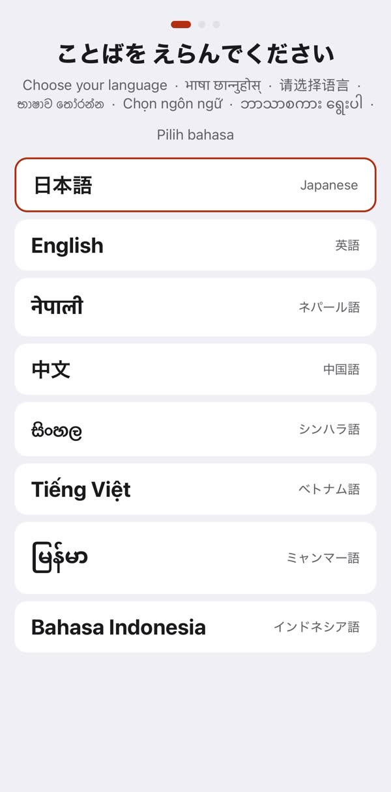
最初に、ことばを選びます（日本語と7か国語）
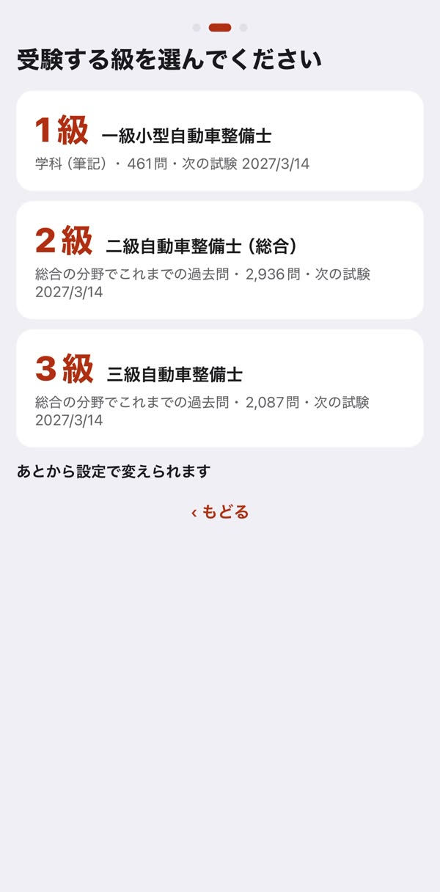
受験する級を選びます（1級・2級・3級）
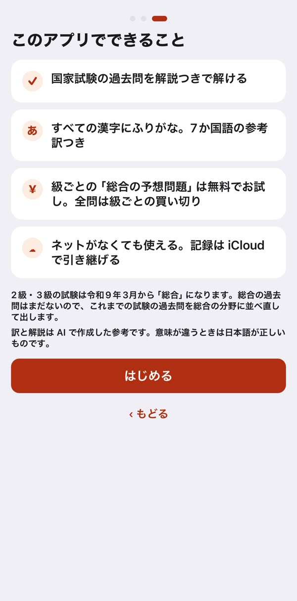
できることの案内
 ホーム。級ごとの「総合の予想問題」は無料で全部解けます
ホーム。級ごとの「総合の予想問題」は無料で全部解けます問題を解く・解説を読む・訳を見る
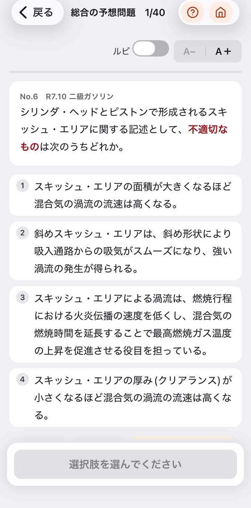
問題の画面（ふりがなを消した状態）
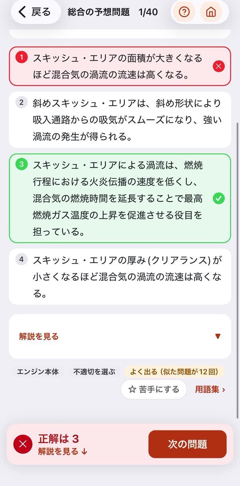
答えると、正解と自分の答えが色で分かります
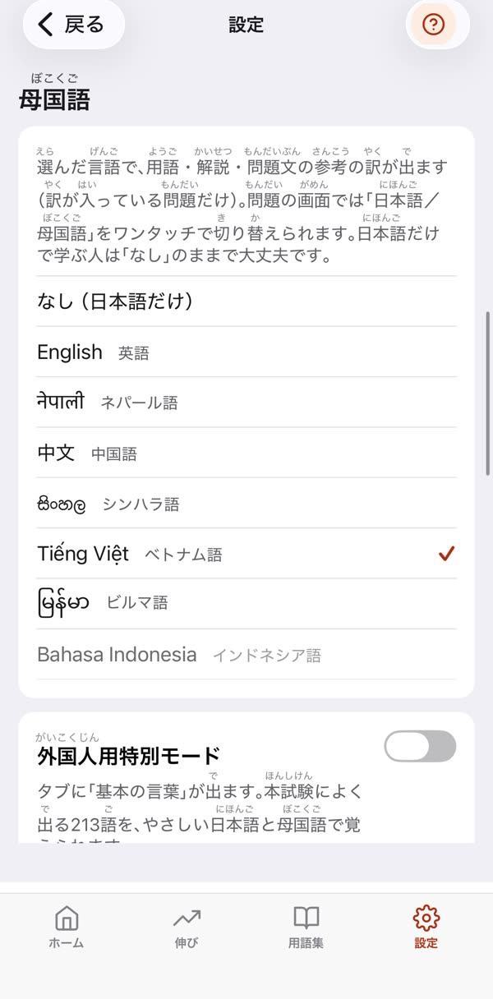
訳の言葉（母国語）は設定でいつでも変えられます
 問題文の訳（ベトナム語）と、この問題の用語の訳
問題文の訳（ベトナム語）と、この問題の用語の訳
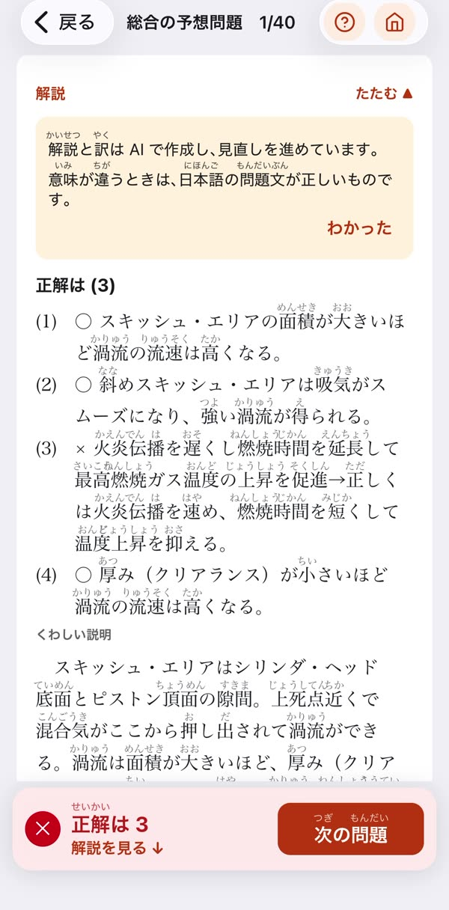
選択肢ごとの解説（ふりがなつき） 問題文と選択肢のすべての漢字にふりがな
問題文と選択肢のすべての漢字にふりがな
 選択肢ごとの○×と、くわしい解説
選択肢ごとの○×と、くわしい解説
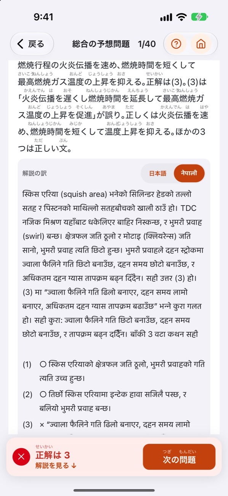
解説の訳（ネパール語）iPad では2列で
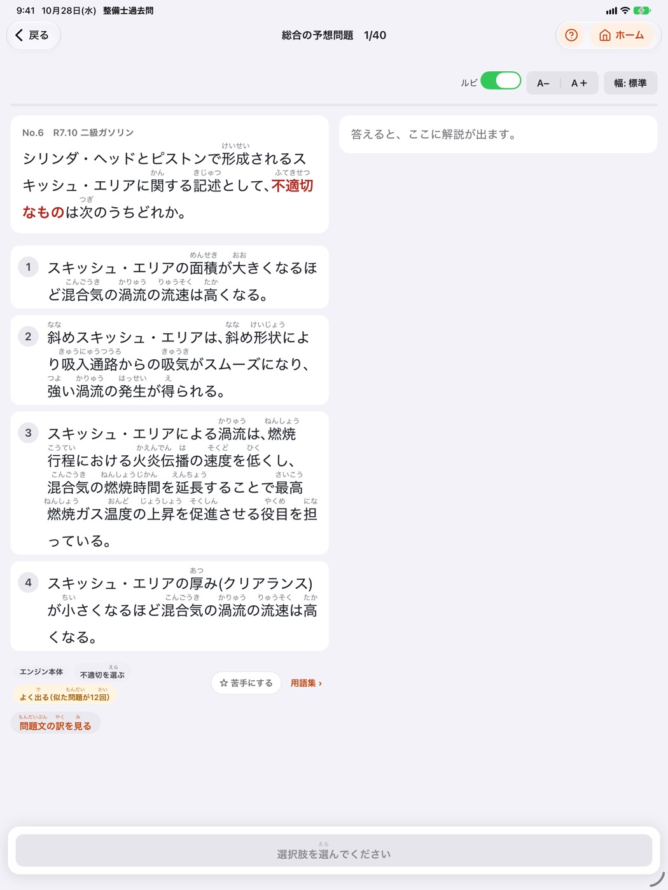
iPad では、左に問題・右に解説を並べて表示
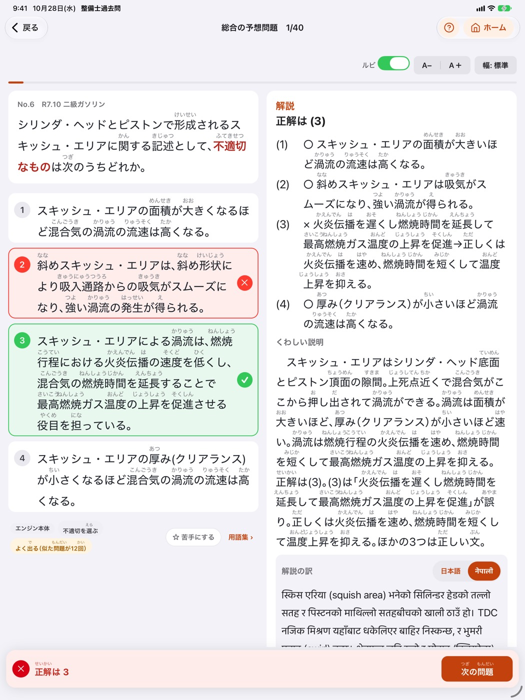
解説を右に開いたまま、次の問題へ
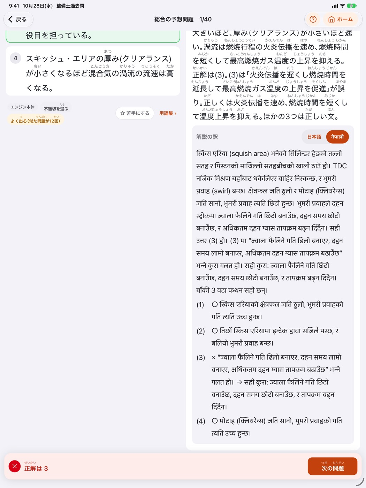
解説の訳（ネパール語）も右の列に購入
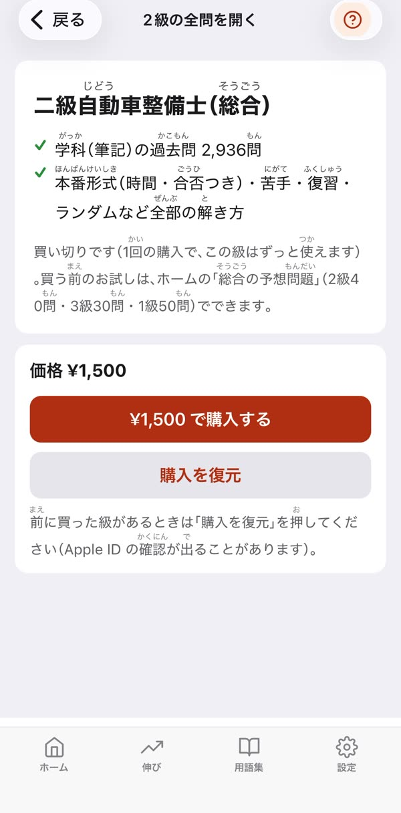
級ごとの買い切りの画面
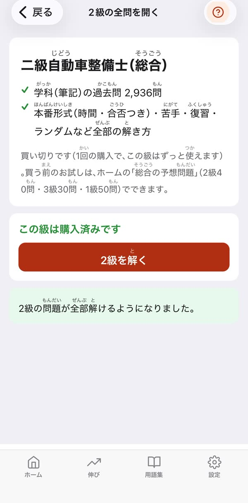
買うと、その級の全問が開きます実際の問題を、ふりがな・解説・訳つきで読めるページもあります: 2級 ・ 3級 ・ 1級